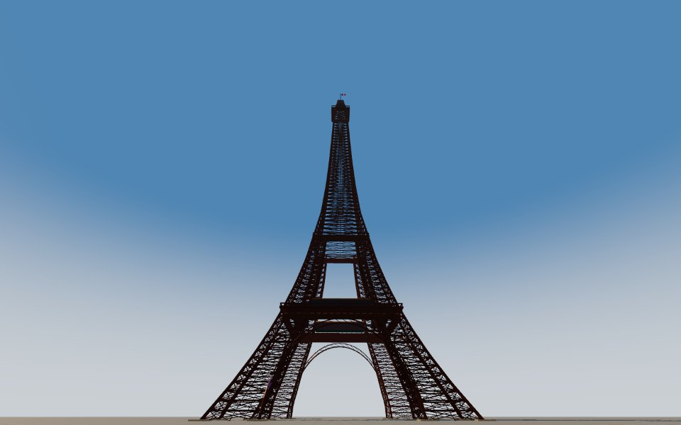
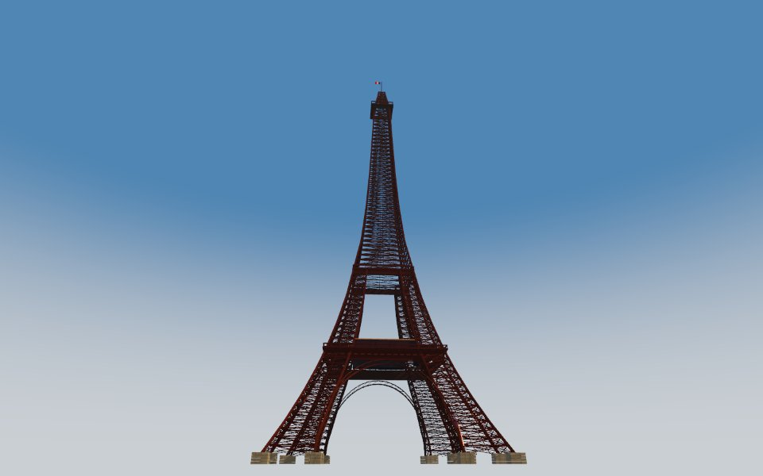
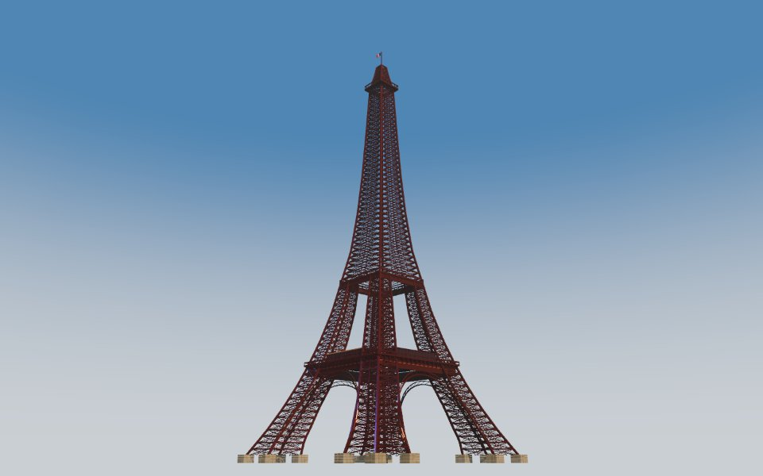
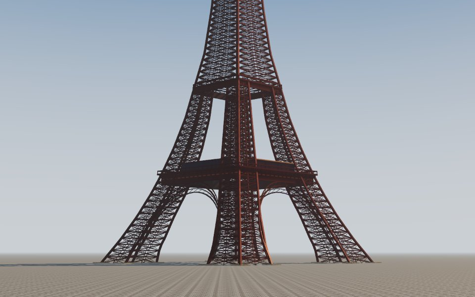
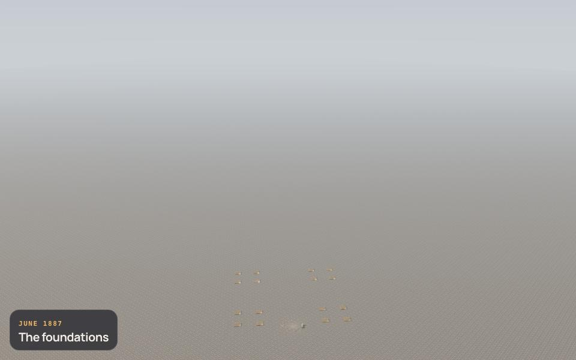
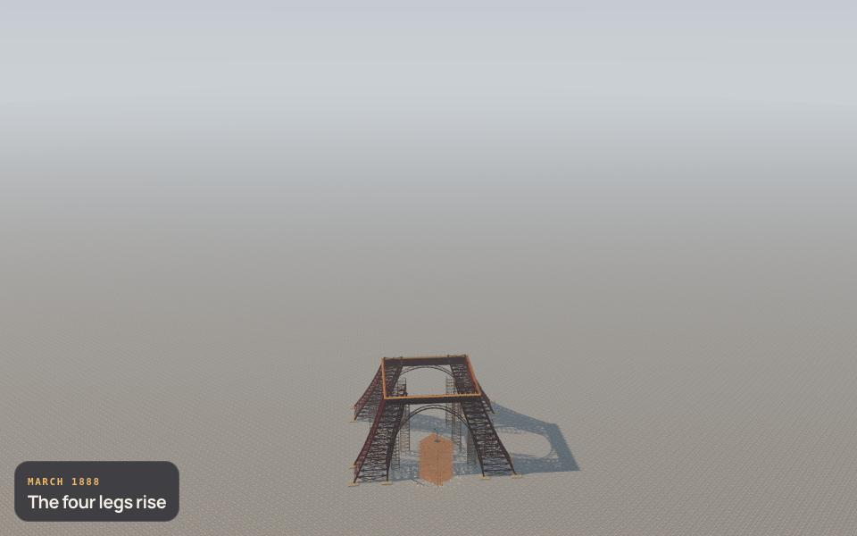
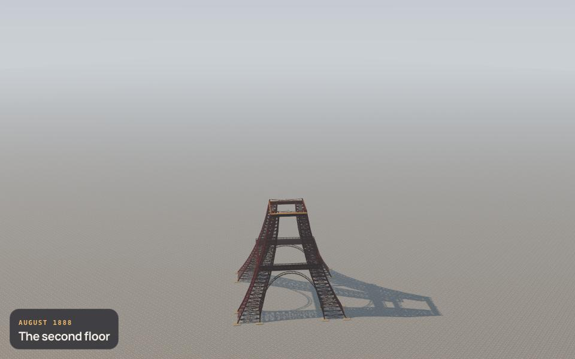
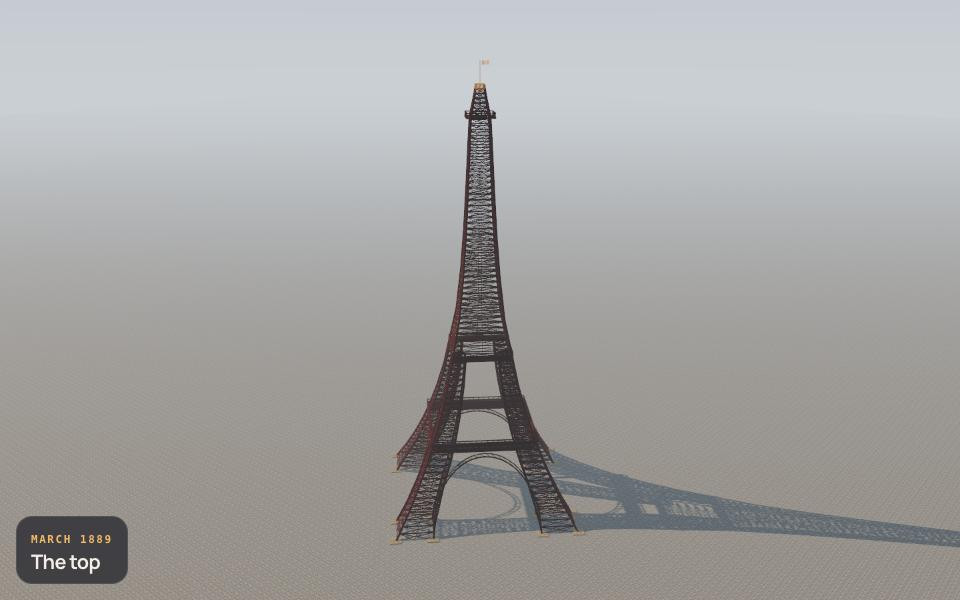
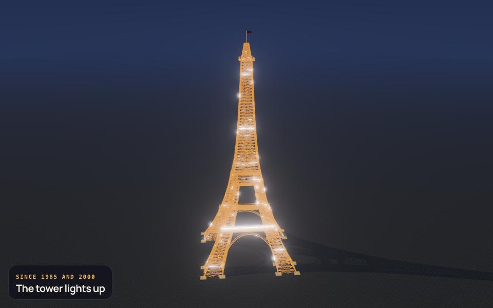
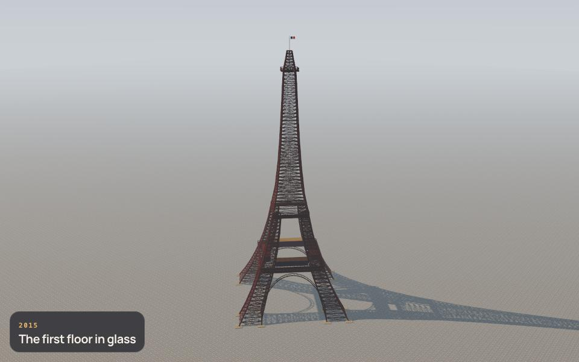

Eiffel Tower · comparison pass 4
Left: the reference photo. Right: the model from the same viewpoint. Write what differs in evidence.comparisons.
ref 0 · south-east, from the Champ-de-Mars lawns (Jebulon, 2011, CC0) · 136°, -32.9°


ref 1 · north-west, from the Seine bank below the Pont d'Iéna (Yann Caradec, 2013, CC BY-SA 2.0) · 319°, -26.7°


ref 2 · west, from the Seine downstream during the 2018 flood (Ibex73, CC BY-SA 4.0) · 268°, -19.8°


ref 3 · north, telephoto on the legs, the arches and the first floor from across the Seine (dconvertini, 2022, CC BY-SA 2.0) · 1°, -7.6°


The end of every phase

1887-01-26 · The foundations
1887-07-01 · The four legs rise
1888-04-01 · The second floor
1888-08-14 · The top
Since 1985 and 2000 · The tower lights up
2015 · The first floor in glass